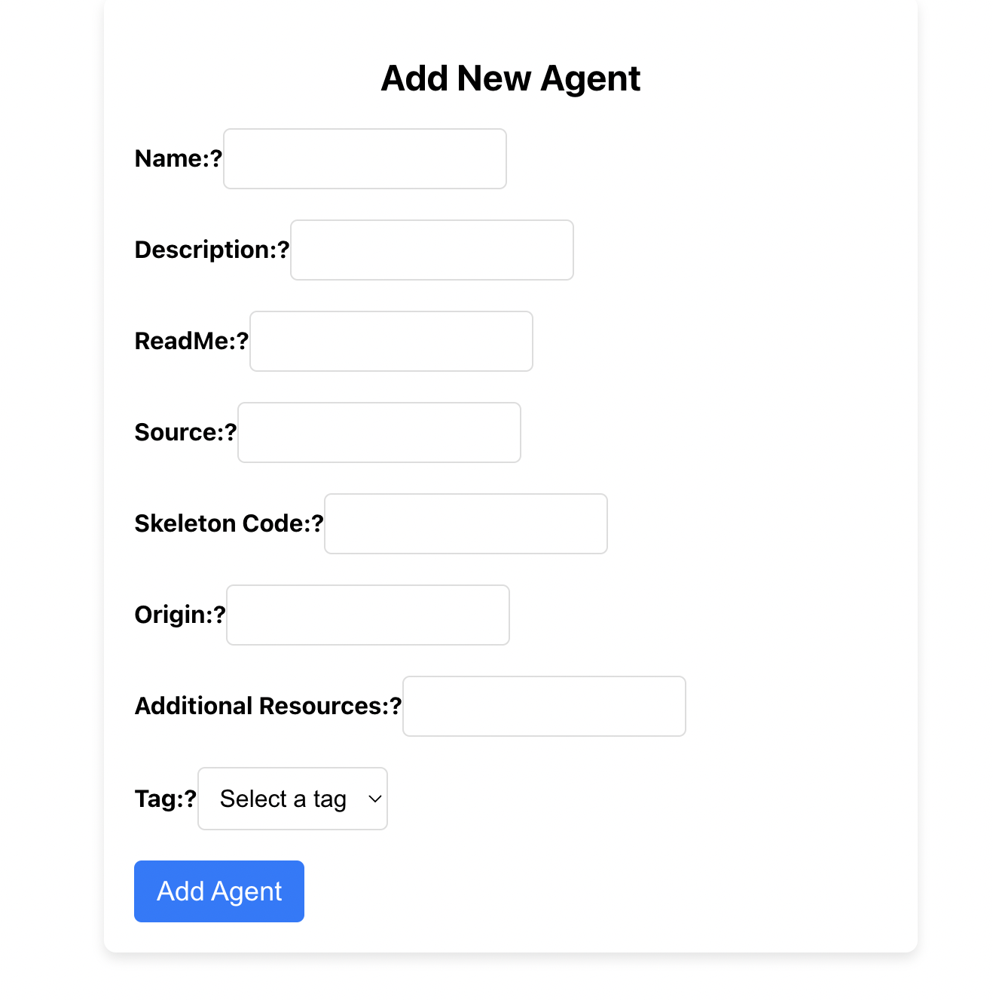

🦍 Gorilla: Large Language Model Connected with Massive APIs
Agent Marketplace: Search and Deploy LLM Agents
Nithik Yekollu Ronit Jain Shishir G. Patil

The marketplace landing page allows users to search and filter across 150+ verified agents.
Large Language Models (LLMs) have enabled a new generation of intelligent agents capable of streamlining online services. These LLM agents can execute API calls, interact with various software systems, and automate routine tasks through natural language understanding.
Key Benefits of LLM Agents:
- Expanded functionality: LLM agents allow language models to directly interact with external systems, databases, and APIs, enabling them to perform a much wider range of tasks beyond just text processing
- Improved performance: By providing LLMs with relevant context and information from external sources, LLM agents can generate more accurate, informed, and less biased responses to user queries
- Automation and efficiency: LLM agents can automate repetitive tasks like data extraction, information gathering, and content creation workflows, freeing up individuals to focus on more complex problems
Unifying Agents Through the Marketplace
The Agent Marketplace provides users with a centralized platform to access and manage multiple LLM agents, enabling efficient and coordinated interactions with online services. This is important for several reasons:
Streamlined Access
- The platform allows users to access a wide range of services and agents through a single, unified interface. This eliminates the need to navigate and manage multiple individual applications or websites, saving time and effort .
Simplified Integration
- The Agent Marketplace facilitates the integration of various services and agents, allowing users to easily connect and utilize them without the need for complex technical setup or in-house development .
Improved Efficiency
- By centralizing access to LLM agents, users can seamlessly execute a variety of daily tasks, such as checking weather updates, getting the latest sports news, ordering food delivery, managing emails, and more, all from a single platform .
Reduced Maintenance
- Users don't have to worry about the ongoing maintenance and updates of individual agents or services, as the Agent Marketplace handles these responsibilities, ensuring a smooth and reliable user experience .
Scalability and Flexibility
- The platform can accommodate a growing number of agents and services, allowing users to expand their capabilities and access new functionalities as their needs evolve .
Overall, the Agent Marketplace empowers users, both businesses and individuals, to leverage the power of LLM agents without the burden of in-house development and maintenance, enabling them to focus on their core activities and objectives .
Dynamic Integration of Service Agents
The marketplace categorizes agents into practical categories such as Communication, Finance, and AI. These agents were sourced from prominent sources such as OpenAI Assistants, LangChain, and LlamaHub. These agents, powered by LLMs, are capable of executing API calls, making them instrumental in automating interactions with online services. For instance, the Yahoo Finance Agent utilizes the yahoo_finance_news tool to retrieve news articles about specific stocks from Yahoo Finance, responding to precise user inquiries about financial markets.
Similarly, the Google Jobs Agent leverages the Google Jobs Tool to fetch current job postings based on specific user queries. This integration showcases the LLM's ability to handle complex information retrieval tasks, providing users with real-time job market updates directly through the agents on our platform.
Yahoo Finance Agent Demo

Yahoo Finance agent responding to queries of market with current news.
Google Jobs Agent Demo

Google Jobs agent providing real time postings of request occupation.
Contributing to the Marketplace
Contributing to the Agent Marketplace is crucial for its development and diversity. By submitting agents, contributors directly enhance the platform's functionality and variety, making a broad range of tools available to users for improving efficiency and productivity. Contributions can be made either through the marketplace interface or via GitHub pull requests. Both methods are designed to facilitate the addition of new agents, ensuring the platform remains dynamic and up-to-date.
Adding Agents through the Marketplace
- Go to Agent Marketplace
- Click "Add Agents" at the top right corner.
- Login/Signup if necessary.
- Fill in the agent details:
- Name: The name of the agent.
- Description: A brief description of what the agent does.
- ReadMe: Content of the ReadMe.MD including instructions for use.
- Source: GitHub repository URL of the agent's source code.
- Skeleton Code: Initial code template for the agent.
- Origin: The origin of the agent if applicable.
- Additional Resources: Any additional resources linked to the agent.
- Tag: Tags for categorizing and searching the agent within the marketplace.
- Click "Submit Agent" to add your agent to the marketplace.



Adding Agents through a GitHub Pull Request
- Navigate to Agent Marketplace Repository on GitHub.
- Fork the repository.
- Navigate to
server/index.js. - Add your agent to the
agentsDataarray using the following schema:const agentsData = [ { name: "Example Agent", description: "This agent demonstrates...", readme: "Usage instructions here...", source: "https://github.com/username/repository", skeletonCode: "function exampleAgent() {...}", additionalResources: "https://resource.link", tags: ["example", "demo"] } ]; - Submit a pull request for your changes to be reviewed and merged into the main branch.
Advanced API Integration and Customization
Each agent on the platform can be customized by the user, including setting up necessary API keys for services that require authentication, such as OpenAI. This feature not only personalizes the user experience but also enhances the functionality of the agents by providing them with the specific parameters needed to execute tasks effectively.
Integration with Gorilla
The Agent Marketplace's ability to leverage LLM-powered agents to execute API calls and automate interactions with online services aligns seamlessly with Gorilla's mission of advancing the practical application of AI technologies. By centralizing access to diverse services through these intelligent agents, the marketplace simplifies the user experience while amplifying productivity, serving as a bridge between complex API processes and end-users.
Future Directions
As the marketplace evolves, it will continuously incorporate agents from a broader array of sources, including user contributions. This collaborative approach aims to steadily expand the range of services available on the marketplace, providing users with access to an increasingly diverse set of LLM-powered agents capable of automating a wide variety of tasks and interactions.
Join Us
The platform invites professionals and developers to explore its features, contribute to its expansion, and utilize its resources to boost the platform.
We hope you enjoyed this blog post. Connect with us on Discord, Twitter (#GorillaLLM), and GitHub.
Citation
If you would like to cite Gorilla:
@inproceedings{agent-marketplace,
title={Agent Marketplace},
author={Nithik Yekollu, Ronit Jain, Shishir G. Patil},
year={2024},
howpublished={\url{https://gorilla.cs.berkeley.edu/blogs/11_agent_marketplace.html}},
}